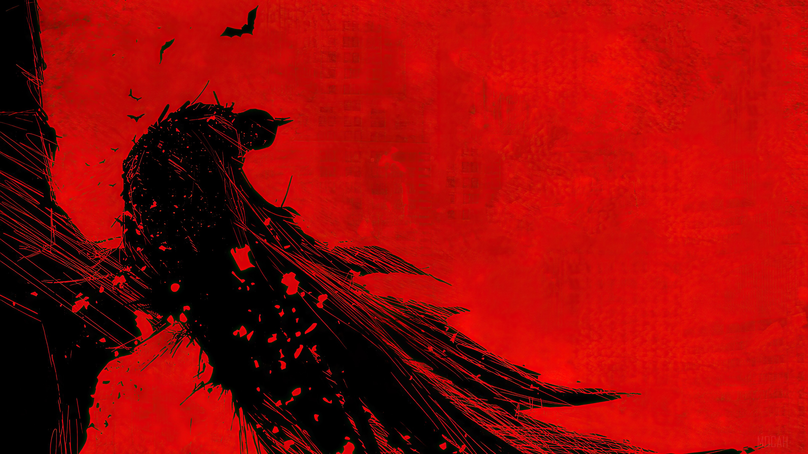

In the sunless abyss that is Gotham City, there is a figure that broods, a relentless sentinel named Batman . Cloaked in the sorrow of an eternal night, he is a creature formed from the bleakest parts of the human condition, a paradoxical embodiment of fear and hope, a beacon of darkness that wards off even deeper darkness.
Born of a senseless violence that stole away his innocent youth, Bruce Wayne, Gotham's prodigal son, forsook his gilded cage of privilege. His path was not to be one of comfort, but of redemption. A soul hardened by loss, sculpted by pain, he wears his torment like an emblem, his identity a shroud woven from the strands of despair and unyielding determination.
Batman is not a hero in the conventional sense. He's a grim avenger, a dark knight who flits across the cityscape, a human tempest that swoops down on the vermin teeming in Gotham's underbelly. His eyes, cold as winter's chill, are windows to an unending storm. His voice, a guttural whisper, carries the bite of a bitter wind, a testament to his indomitable will.
Every bruise, every scar on his battered body is a stanza in a ballad of grim resilience. Each weapon in his arsenal, each tool in his belt, a symbol of his relentless pursuit of justice. His enemies - the lunatics, the corrupt, the damned, the forsaken - they fear him, for he's become an avatar of their nightmares, the embodiment of the retribution they've long eluded.
Bathed in the urban twilight, the Batman exists, relentless and solitary. He has embraced the mantle of darkness to combat the atrocities thriving in the shadows. His is a story written in blood and etched in scars, a grimdark vigilante, the dark reflection of the city he has vowed to protect. In the end, he is a paradox - a being that embraces the abyss, yet refuses to be consumed by it.
Underneath the guise of Gotham's elite, the man, Bruce Wayne, is nothing more than a shell; Batman is the soul, the core, forged in the crucible of sorrow. A creature of darkness, yet a bringer of light, he is as enigmatic as the city he protects. His is a symphony of silent screams echoing within the cavernous expanse of his solitude. He bleeds so that the city doesn't have to, a sacrificial lamb in a city of wolves.
His cape, a spectral shroud, fans out into the night, a reminder of the invisible boundary he establishes between innocence and malevolence. Beneath the moon's spectral glow, he's a spectral wraith, the embodiment of Gotham's raw, unvarnished spirit.
In a city teetering on the edge of the abyss, he is the balance, a grimdark gladiator, wrestling with chaos and the very essence of human depravity. He stands against the night, a solitary figure, etched in shadow and bathed in the harshest of realities. His resolve remains unbroken, an ironclad testament to the resilience of humanity, even when shrouded in the bleakest of despair.